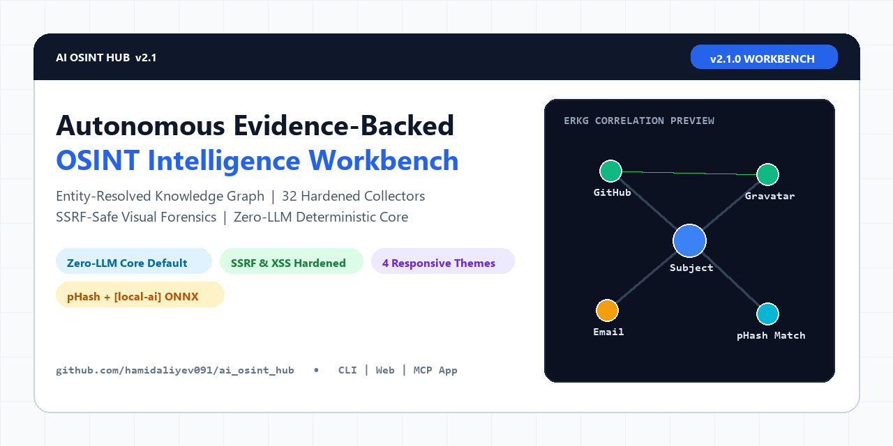
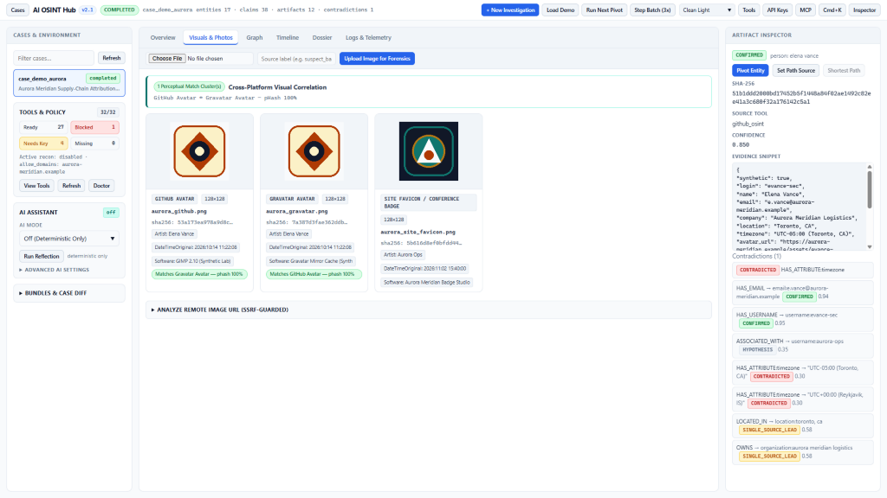

AI OSINT Hub: Enterprise-Grade OSINT Engine
Autonomous Threat Attribution & Intelligence Collection Platform
Engineered as a zero-LLM deterministic foundation with mathematical confidence scoring, SQLite WAL transactions, 32 integrated reconnaissance capabilities, automated visual forensics, and code-enforced defensive boundaries.
- Presenter: Hamid Aliyev
- Target Opportunity: Cyber Threat Intelligence (CTI) / Security Automation
- Repository: github.com/hamidaliyev091/ai_osint_hub
- Status: v2.1.0 Released • 745 Automated Tests • 32/32 Tools Verified

The Core Problem in Modern Threat Intelligence
⚠️ The Status Quo in Most SOCs
- Tool Fragmentation: Analysts juggle 10–20 disparate CLIs (theHarvester, holehe, sherlock, shodan), manual note-taking, and broken terminal logs.
- "AI Wrapper" Hallucinations: Unchecked LLMs generate plausible but fabricated email addresses, aliases, and IP mappings with zero proof.
- Synthetic Accounts & Noise: Bot committers (web-flow) and generic paths (/members) contaminate threat actor identity graphs.
- Defensive Risks: Fragile scraping scripts cause SSRF leaks, loopback hits, or unintended active attacks violating client engagement scope.
🛡️ The AI OSINT Hub Solution
- Unified Execution: Single-command autonomous orchestrator coordinating 32 tools through a hardened runtime.
- Deterministic Ground Truth: Closed 6-state epistemic model where NO claim can exist without cryptographic SHA-256 evidence.
- Automated Entity Unification: Single-subject ERKG automatically merges verified handles and suppresses bot noise.
- Code-Enforced Security Gates: Pre-spawn SSRF guards (assert_safe_host), strict Hydra auto-blocking, and untrusted data quarantine.
5-Layer Deterministic Pipeline Architecture
Multi-Clue Intake
Extracts names, emails, handles, domains, and phone numbers with transliteration preservation.
Policy & Scope Gate
SSRF enforcement, RFC 1918 blocking, redirect verification, and active-recon policy blocks.
Hardened Runtime
32 collectors across native HTTP, authenticated APIs, managed sandboxed CLIs, and WSL2.
ERKG Store & UI
Atomic SQLite WAL transactions, 6-state epistemics, visual forensics, and multi-theme UI.
Key Architecture Invariants:
Closed 6-State Epistemic Model & Entity Resolution
| Epistemic Status | Operational Meaning in PROSOL Investigations | Evidence Requirement |
|---|---|---|
| CONFIRMED | Indisputable ground truth cited in official client briefs. | Direct user seed clue OR multi-source cryptographic match. |
| CORROBORATED | High-confidence corroborated fact verified across independent tools. | $\ge 2$ independent tool collectors confirming exact predicate. |
| SINGLE_SOURCE_LEAD | Unverified lead requiring analyst follow-up. | 1 tool output; clearly flagged with source artifact. |
| HYPOTHESIS | Bounded speculative permutation (e.g. probable email handles). | Artifact-free candidate; confidence capped at $\le 0.35$. |
| CONTRADICTED | Mutually exclusive conflict detected on a functional predicate. | Alerts analyst immediately for human-in-the-loop review. |
v2.1.0 Precision Enhancements:
• Multi-Valued HAS_EMAIL: Eliminates artificial contradictions when a target has both personal and work emails.
• Entity Deduplication: _unify_duplicate_persons links verified GitHub/Twitter handles directly to the primary subject.
• Infrastructure Tagging: gmail.com and *@users.noreply.github.com tagged as infrastructure to avoid fake ownership claims.
Defensive Boundaries & SSRF Sandboxing
🔒 Pre-Spawn SSRF Guard (assert_safe_host)
- Loopback Blocking: Instantly rejects
127.0.0.0/8and::1. - Private Subnet Isolation: Blocks RFC 1918 internal subnets (
10.0.0.0/8,172.16.0.0/12,192.168.0.0/16). - Cloud Metadata Protection: Forbids AWS/GCP link-local IPs (
169.254.169.254). - Redirect Hop Re-validation: Manual redirect loops re-run full IP validation on every HTTP 30x response.
🛡️ Policy Gating & Prompt Injection Defense
- Hydra Policy Block: Intrusive brute-force tools are strictly gated (
INTRUSIVE_BLOCKED) and show honestly asBLOCKED. - Shell-Free Execution: Zero
shell=True. All subprocesses run viastdin=DEVNULL, eliminating command injection. - Prompt Injection Quarantine: External scraped strings are sanitized and isolated inside
<untrusted_osint_data>tags. - Zero Client XSS: Web UI uses safe DOM text assignment with zero
innerHTMLoreval.
Visual Forensics & Cross-Platform Avatar Correlation
Automated Perceptual Hashing (pHash)
When investigating threat actors across forums, GitHub, and social media, avatars are often resized or re-encoded. Perceptual hashing calculates visual frequency fingerprints invariant to scaling or compression.
- Extracts EXIF camera metadata and GPS coordinates when available.
- Supports manual analyst drag-and-drop file upload for local forensics.
- Preserved in cryptographic
.osintcase.zipexport bundles.

32-Tool Enterprise Capability Matrix
Tier 1: 13 Passive Native Collectors
Pure async HTTP, zero external binaries, instant readiness:
Tier 2: Authenticated Intelligence APIs
Key vault with automatic redaction from logs and artifacts:
Tier 3: Managed Sandboxed OSINT CLIs
Isolated venvs with redirected user home directories:
Tier 4: System & Network Diagnostics
Windows PATH with seamless WSL2 Ubuntu fallback:
python -m hub.cli doctor: 32/32 Available & Healthy on the reference host.
Enterprise Workbench UI: Multi-Screen & 4 Themes
Designed for SOC Production
- Overview First: Verified accounts, emails, and repositories highlighted immediately.
- Cytoscape 'cose' Graph: Force-directed spring relaxation with solid matte label pills ensuring zero label collision.
- Responsive Layout: Flexbox rail + container architecture scales cleanly from 1280×800 to 4K ultrawides.
- 1-Click Export: Print-ready HTML dossiers and cryptographically hashed
.osintcase.zipbundles.
• Midnight Slate: Low-contrast 24/7 dark watch floor mode.
• Warm Paper: Soft reading parchment.
• Gruvbox Dark: Classic terminal contrast.

Pragmatic, Local-First AI Integration
1. Deterministic Core (Default)
Zero LLM dependencies. Entity resolution, confidence math, and graph building execute 100% via SQLite and deterministic Python rules. Zero token cost, zero latency, zero hallucinations.
2. Built-in [local-ai] (ONNX)
Powered by fastembed. Runs completely local text embeddings and CLIP visual similarity inside the Python process. No Ollama daemon, no external server, no GPU needed.
3. BYOK Cloud / Local LLMs
Supports Ollama, LM Studio, Google Gemini, DeepSeek, and OpenAI-compatible endpoints for executive briefing synthesis. All outputs strictly bounded as AI_INFERRED.
Live Demonstration Script (5-Minute Walkthrough)
Complete, deterministic offline demonstration script using synthetic case case_demo_aurora:
# 1. Verify system toolchain integrity (Expected: 32/32 AVAILABLE)
python -m hub.cli doctor
# 2. Seed synthetic demonstration case (Aurora Vance - Threat Actor Profile)
python -m hub.cli demo
# 3. Launch Web Workbench with automated browser opening
python -m hub.cli web --open
Demonstrate unified identity card, verified accounts (GitHub, Twitter, Keybase), and email infrastructure separation.
Show the exact perceptual hash match between GitHub and Gravatar avatars proving cross-platform attribution.
Navigate the Cytoscape correlation graph and trigger 1-click export of the HTML client dossier.
Direct Value Proposition for PROSOL Business Units
| PROSOL Department | Current Operational Friction | AI OSINT Hub Value Delivery |
|---|---|---|
| Cyber Threat Intelligence (CTI) | Manual actor profiling takes 3–5 hours across browser tabs. | Automated pivot engine correlates handles, emails, and PGP keys in < 90 seconds. |
| Incident Response & DFIR | Assessing external exposure of leaked executive credentials is slow. | Rapidly maps exposed GitHub repositories, public keys, and corporate email infrastructure. |
| Red Team & Pen Testing | Passive recon risks exceeding authorized scope or triggering alerts. | Enforces strict passive-first rules, pre-spawn SSRF checks, and immutable execution ledgers. |
| SOC & MDR Reporting | Formatting client-facing attribution reports consumes analyst hours. | Generates presentation-grade HTML/PDF dossiers with cryptographic evidence citations. |
Why Hamid Aliyev is Ready for PROSOL
Engineering & Security Excellence:
- Deep Systems Architecture: Proven ability to architect asynchronous Python engines, SQLite transaction models, and multi-tier tool execution pipelines.
- Defensive-First Mindset: Built-in SSRF validation, policy gates, input sanitization, and cryptographic auditing in every module.
- Production-Tested Quality: 745 automated tests, 32/32 healthy tools, clean Docker builds, and zero regression failures.
- Operational Empathy: Designed with deep respect for analyst workflows, ergonomics, and actionable client reporting.
Anticipated Technical Defense:
A: Maltego is a manual UI visualizer with proprietary licenses. AI OSINT Hub is an autonomous async engine with mathematical truth scoring and zero vendor lock-in.
Q: "How do you protect investigator OPSEC?"
A: Passive tools query replicated public indices without touching target servers. All HTTP traffic supports corporate SOCKS5/VPN proxy routing.